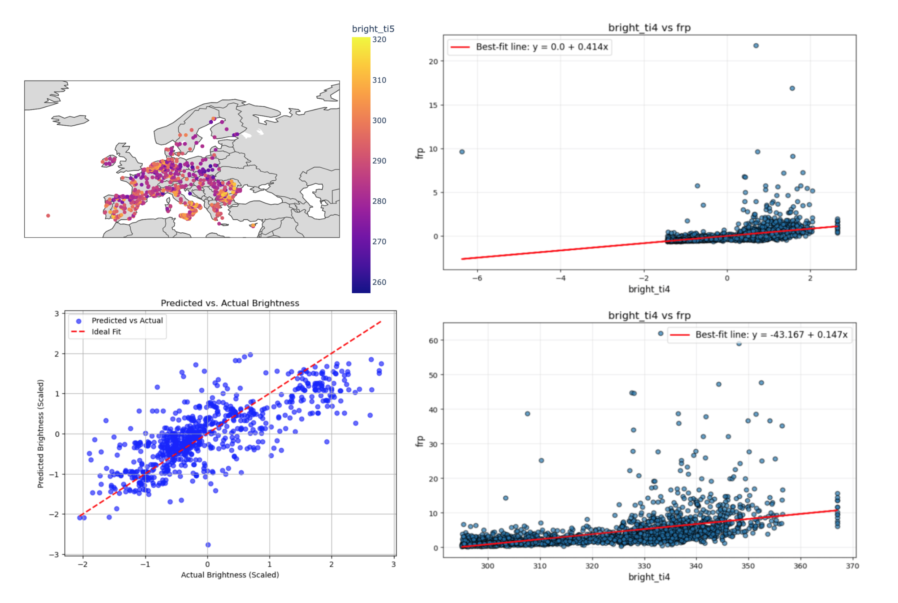
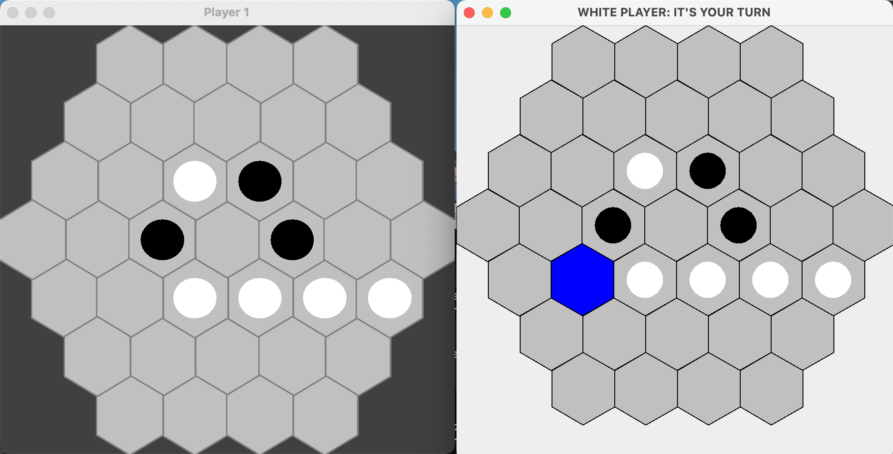
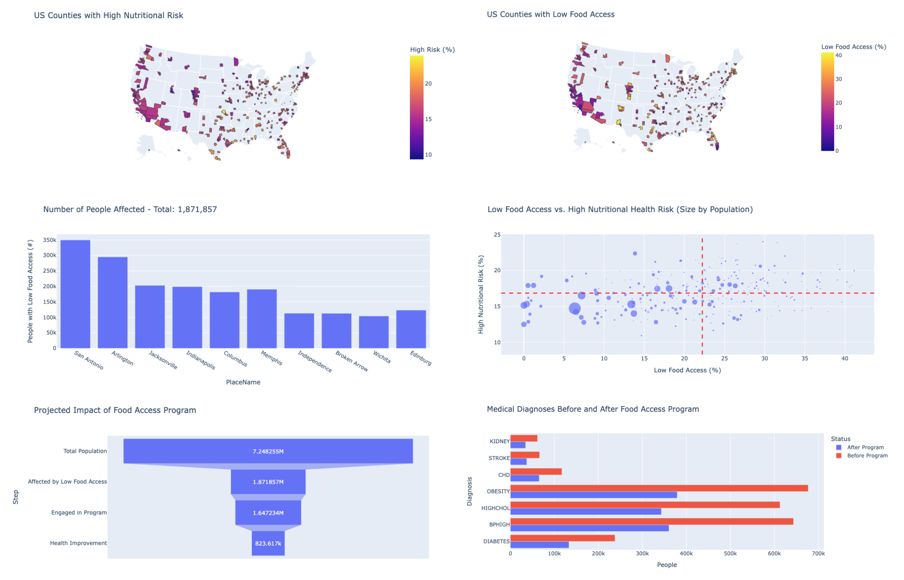
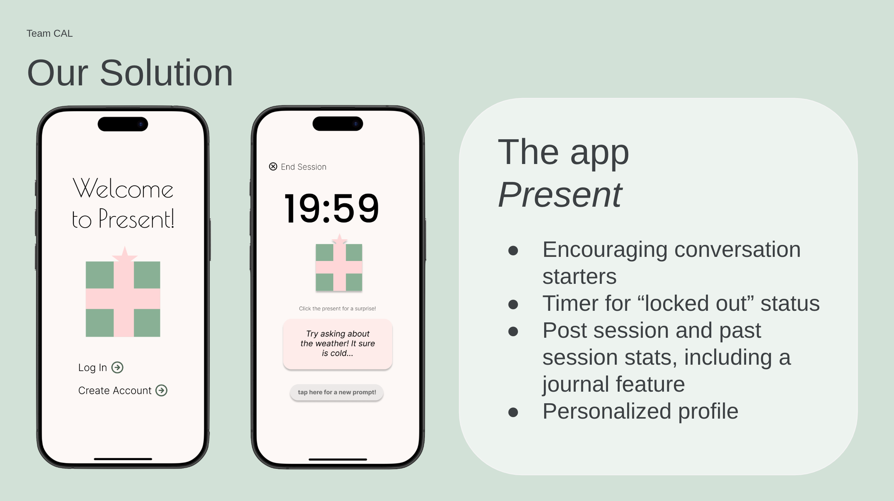
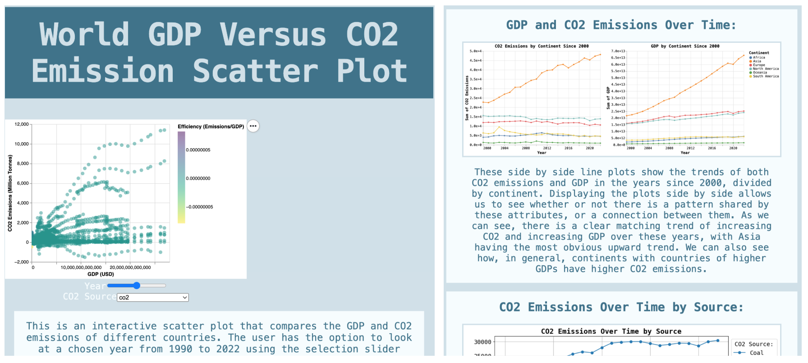

This website!
Created originally for my Information Presentation and Visualization course, this website both showcases
by HTML/CSS/JavaScript skills and serves to organize my projects and experiences. (You're here now!)

Wildfire Machine Learning Project
Using data from NASA’s Fire Information for Resource Management System (FIRMS) API, this project aimed
to predict wildfire occurrence through the development of linear regression, polynomial regression, and
classification models.

Reversi Game
This Java implementation and GUI for the game Reversi utilizes a model-view-controller design pattern and
implements virtual opponents to automatically play turns based on a set of decision-making algorithms. This project
also includes an adapter class to easily couple the existing game model to an outside GUI implementation.

Health and Food Insecurity Project
As a small passion project in Python, this work explores the relationship between population health
and food insecurity in U.S. Cities through the analysis and visualization of publicly available
CDC and FDA data.

"Present" App - Figma Prototype
Built on Figma for my Human Computer Interaction course, this application aimed to solve the problem of
student isolation by encouraging conversation between nearby users. We utilized components, variables,
conditional logic, and more to create this high-fidelity prototype.

CO2 vs. GDP Project
This project showcases various visualization tools and techniques in Python and HTML/CSS/JavaScript,
including important libraries such as Matplotlib, Seaborn, Plotly, Altair, and D3. The end result is an
interactive website highlighting data analysis findings from C02 emissions data.
